Case study · Personal project · Built solo
JobBuddy
An AI interviewer you practise with on a live video call
JobBuddy puts you on a live video call with Meera, an AI HR interviewer who reacts while you talk. After the call, her scorecard shows what you said and what to say instead. Retry the question and see the improvement. I designed it and built it alone, directing AI agents that wrote the code and generated her motion.
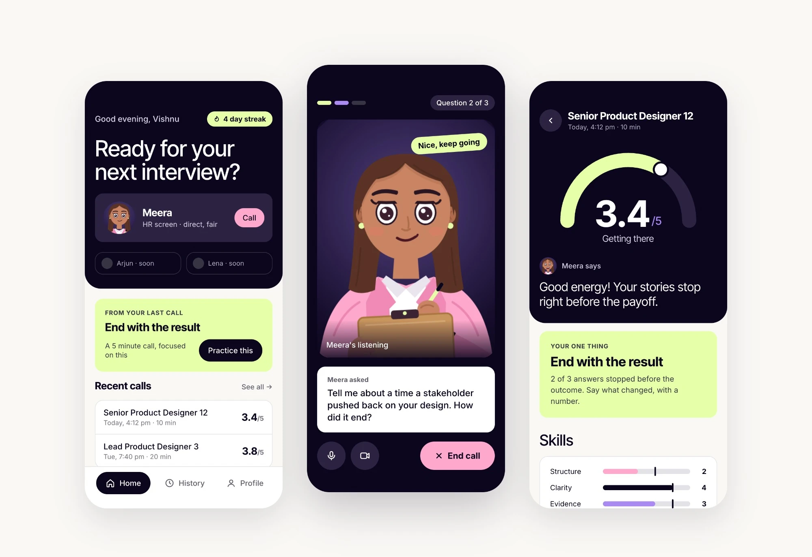
- How I built it
- Solo, through agentic workflows. Claude Code wrote the app. Meera's rig and motion were generated as code with the Rive CLI, with no hand animation.
- My role
- Sole owner, end to end: product strategy, UX and UI, and Meera's character, motion and behaviour. I directed every agent and reviewed every build.
- Time
- ~6 hours. My time went to designing, deciding and reviewing.
- Type
- Personal project
- My stack
- Claude, Claude Code, Paper, Rive, ElevenLabs Agents, Gemini, Next.js
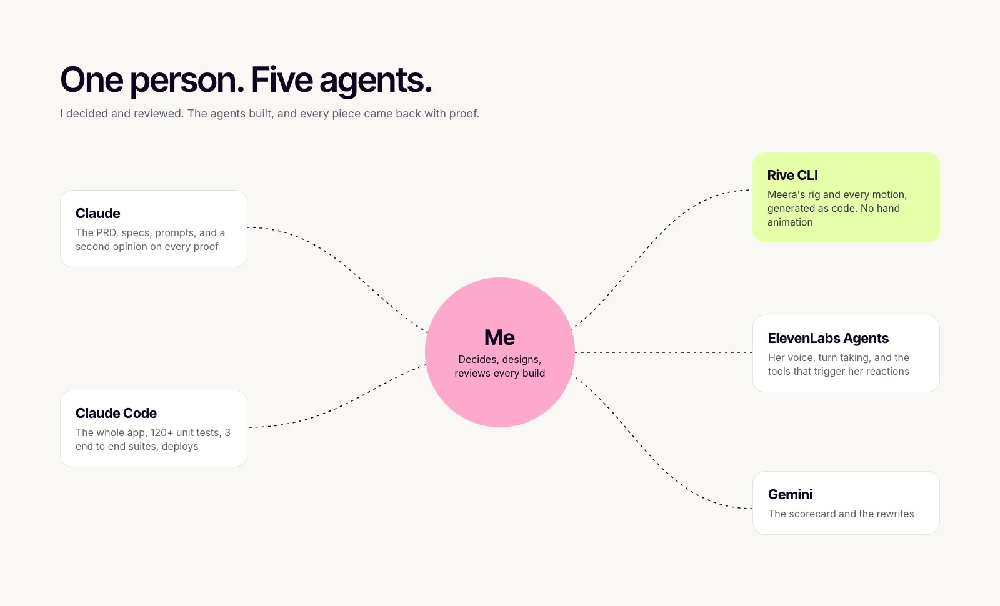
The problem
You can tell an answer went badly. You can't tell what to fix, or how.
It's for anyone with a real interview coming up, at any level. Every level has a behavioural round, and those answers need practice out loud.
Telling your story clearly under pressure is a skill, separate from doing the job well, and it improves with practice. I've seen how people prepare, and done it myself: polish answers with AI chat, then rehearse them alone. Nothing stops you mid ramble, and nothing tells you what to fix. Getting better takes four steps, and practising alone, most of them are guesswork.
I also wanted to see how far I could take a product alone, with AI writing the code, at a quality I could prove.
Why a call, not a chat. The hard part of an interview isn't knowing the answer. It's giving a good one on the spot, while someone watches you on a video call. In a chat you can pause, think and edit before you send. Rambling, fillers and answers with no result only show up when you speak. And a chat reacts only after you finish. A call can react while you talk: a nod when an answer lands, a look when you drift, a cut in when you run long.
My bet: practice works when it feels like the real thing and tells you exactly what to fix.
What it does
Every call ends with better answers than you walked in with.
JobBuddy is one loop: take a call, read the scorecard, retry your weakest answer. The new answer is scored next to the old one, so you know you improved instead of hoping you did.
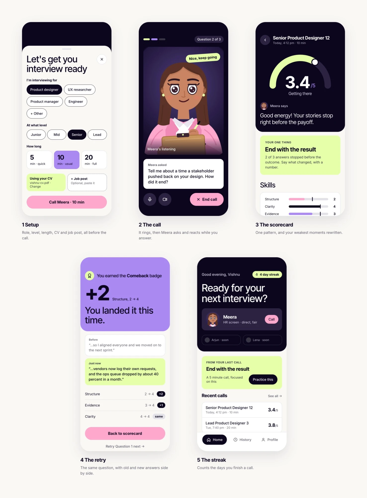
The call ends. Now you find out what to fix, and how.
You hang up, and within 20 seconds the scorecard is ready.
Not a list of flaws. One pattern to work on, with proof, like "2 of 3 answers ended before the result". Then your two or three weakest moments: what you said, next to how to say it better, built only from your own facts and judged against your level. A missing number stays a blank for you to fill. It's never invented.
The call's score stays as it was. A retry is scored on its own, next to it. So when it says "+2 on structure", you really got better.
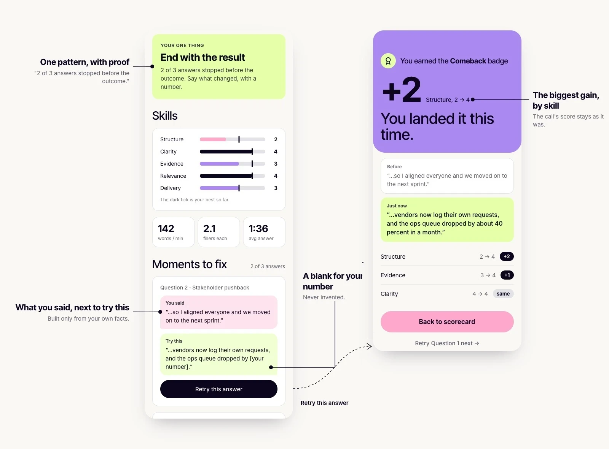
Under the hood Judged against your level
Each answer is scored 1 to 5 on five skills: clarity (can it be followed on first listen), structure (situation, action, result, in that order), evidence (specifics, with a number or outcome), relevance (does it answer the question asked) and delivery (pace, filler, hedging). The bar moves with your level. Junior: what you did and learned. Mid: what you owned and the outcome. Senior and above: scope, decisions, influence and tradeoffs. A 3 is a passable answer at your level. Technical correctness is never graded.
| Skill | 1 | 3 | 5 |
|---|---|---|---|
| Clarity | Hard to follow what happened | Followable with effort | Clear on first listen |
| Structure | No situation, action or result | Two of the three | All three, in order, result last |
| Evidence | No specifics | Some specifics, no numbers | Specific, with a number or concrete outcome |
| Relevance | Answers a different question | Mostly on the question | Directly answers it, nothing extra |
| Delivery | Heavy filler, hedging or rambling | Some filler, or one long stretch | Steady pace, little filler, no hedging |
Designed for, not yet measured
Not launched, so nothing is measured yet.
Calls that reach the scorecard. Drop before it, and nothing else matters.
People who retry their weakest answer. Finishing shows effort. Retrying shows they're getting better.
A streak for daily practice. No XP, which rewards time spent, not getting better.
First change I'd make: the nudge to practise today lives in History. It belongs on Home, where it can pull someone back.
The riskiest question first
Each step settled the biggest open question first.
Could a voice agent run an interview, fire reactions and time lip sync? Tested in a bare call screen. A call from day one.
Was the call and scorecard loop worth having? A simple orb was enough to find out.
She was the most expensive part, and her expressions came from what the settled flows needed.
How Meera behaves
Meet Meera. She's a tough interviewer, and she's on your side.
Meera had to feel like a real interviewer, not a chatbot that waits for you to finish. That came down to rules about when she reacts, when she speaks, and what she never does.
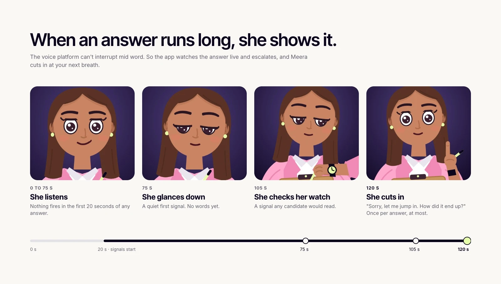
At 120 s, at your next breath
The voice platform can't interrupt mid word, so the app watches the answer and escalates. Once per answer, at most.
"So how did that turn out?"
She asks for the result and steers you back once. Coaching waits for the scorecard, so the call stays real.
"Take your time."
Early calls asked "Are you still there?" Now a pause means thinking. She leans in, then repeats the question in fewer words.
Never asks about
A CV gap is asked about once, neutrally, and never flagged.
Never "great question"
She looks impressed at most twice a call, and only for a clear result or a sharp insight.
Under the hood How Meera thinks
- Two layers. The app runs the timed rules, because the voice platform can't interrupt mid word. Meera judges the rest at the end of each turn, like a story with no result.
- The long answer clock. She glances down at 75 s, checks her watch at 105 s and cuts in at your next pause after 120 s. Nothing fires in the first 20 s, and she interrupts once per answer at most.
- Filler and hedge bursts. 6 or more fillers, or 3 or more hedges, in one answer raise a brow, once.
- Her tools in the app. react fires one of her reactions. flag notes a moment for the scorecard and plays her writing mood. setPhase moves the call from opening to interview to done. nextQuestion moves "Question 2 of 3", and the app ignores it if she hasn't asked a new one.
How it was made: her personality is a system prompt I wrote with Claude. Her live reactions are app rules I specced and Claude Code built.
Built to be trusted
Practising for an interview is personal. The app treats it that way.
Nothing leaves your phone
No account, and calls are never recorded. Your CV, transcripts and scores stay on your phone.
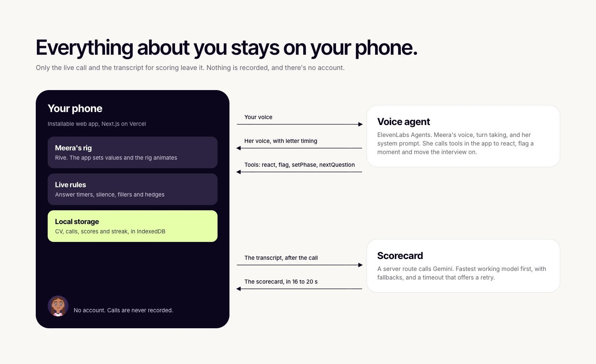
01 · Failure states
Nothing gets stuck
Every way a call can go wrong has a planned way out.
02 · Cost
Call time is spent on the interview
Every minute on a call costs voice credits. So anything that can happen off the call does.
- Role and level
- Length: 5, 10 or 20 min
- CV and job post
- A short opening
- Questions and follow ups
- Her closing line
- Built from the transcript
- Saved on your phone
03 · Accessibility
Accessible by design
Motion follows your phone's settings. Meera stays expressive but stops moving around.
Contrast is a rule in the tokens, not a final check. The one primary action is pink with dark text, never white. White on pink measured 3.37:1 in my first direction, so the rule went into the system.
Rules made her act like an interviewer. She still had to feel like one.
Making her feel present
She had to feel like someone on the other end of a call.
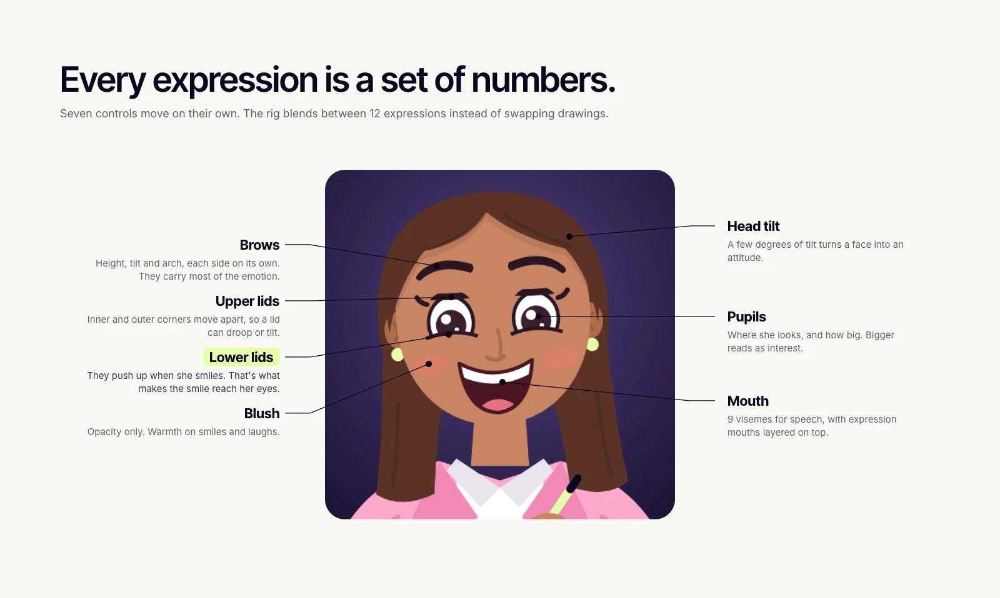
How it was made: her concepts were designed in Paper. Her rig and every motion were generated as code with the Rive CLI from her vector parts. No keyframes were drawn by hand.
She felt flat, so I measured it
She looked lifeless while talking. Per frame, 1.80% of her tile changed at idle and only 2.0% while talking: just her mouth. So I redrew her as Concept v2, with long hair, a clipboard, arm poses and a talking loop.
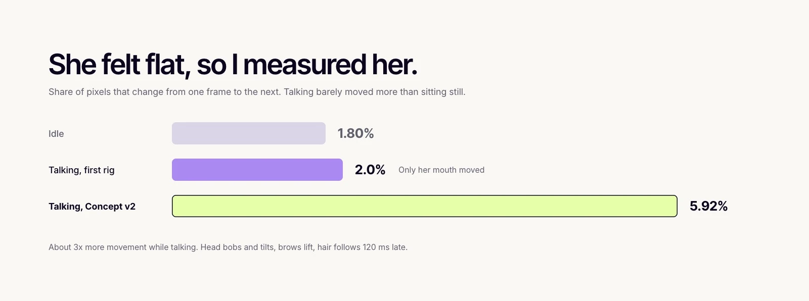
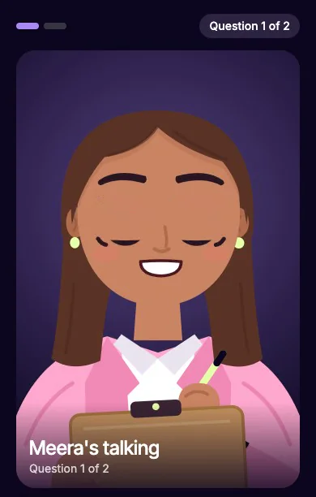
- When
- Every time she speaks. This clip is from a real call.
- What
- A 2 s loop: her head bobs on uneven beats, tilts a little, and her brows lift. Her hair follows 120 ms late.
- Why
- With only her mouth moving, she looked frozen. Movement across her whole face makes her feel present.
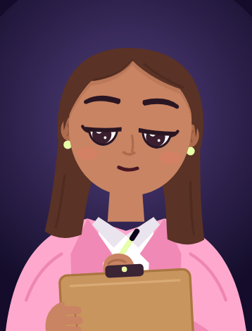
- When
- When she notes something in your answer for the scorecard, and while the scorecard is being written.
- What
- Her eyes drop and her pen moves behind the clipboard.
- Why
- You can see your answer being noted, like with a real interviewer.
14 reactions, one face
Each one is a short move on the same controls, then straight back to listening.
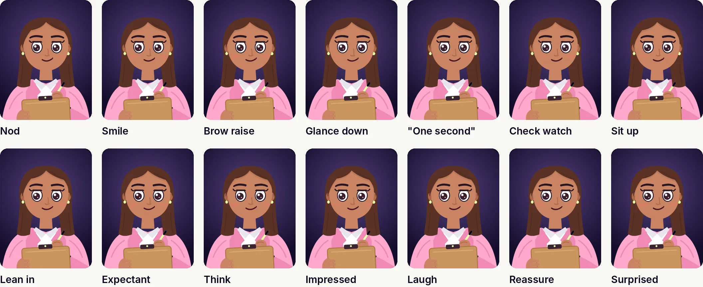
Under the hood How the rig is built
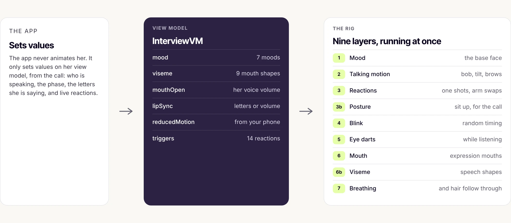
- Generated, not drawn. A script turns her vector parts and a file of expression values into the whole rig. The Rive CLI compiles it.
- One frame swaps. Eyes, mouths, visemes and arm poses cut on a single frame, so two half transparent parts never overlap.
- Guards in the build. It refuses a rotation stored the long way round, and any part animated by two layers at once.
$ node rive/rig/make-rig.js && rive rive --publish=local rive published rive/meera.riv (93479 bytes, 2243ms, 0 errors, 0 warnings)
A call should ring
"Connecting…" felt like loading, not calling someone. Now it rings, and her picture grows into the video tile when she answers. She appears in 0.8 s, down from 2.9 s.
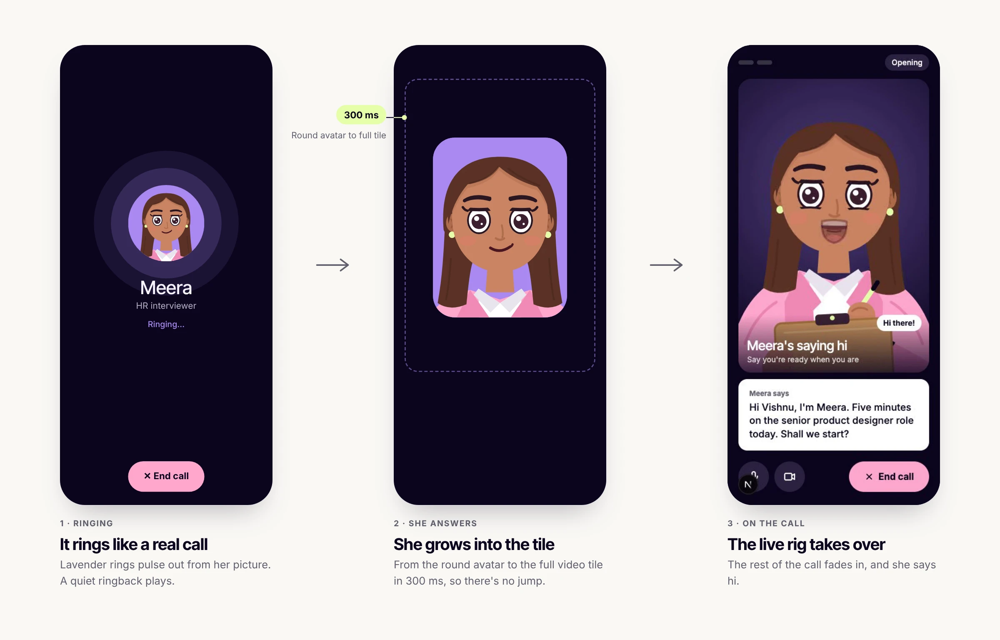
None of her was hand coded or hand animated. Here's how I built her, and the app, and how I checked the work.
How I built it alone with AI
Nothing shipped without proof.
I wrote the PRD, made every product and design decision, designed the screens and the character, and tested every version on my phone. Claude Code wrote and tested the code. Claude helped me explore options and draft specs.
AI is fast, confident and sometimes wrong. So I reviewed every step: the spec before anything was built, the build once it came back, and the proof that it worked. Nothing counted as done on a report alone.
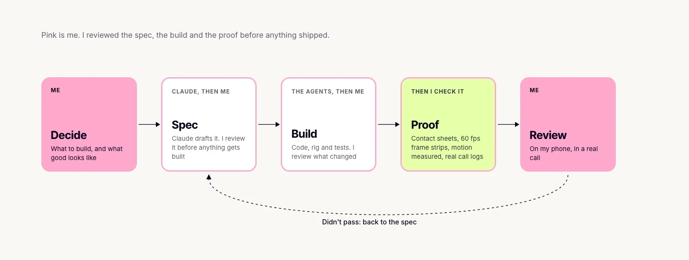
Under the hood Everything that counted as proof
- Contact sheets. Every state of the rig beside its reference pose, with differing pixels in red.
- Frame captures at 60 fps. Every expression switch, so a one frame glitch can't hide.
- Motion measurements. How much of her moves per frame, idle and talking.
- Real call logs. When something broke on a call, the fix started from the log, not a guess.
3 calls Where my call overruled the AI
Three times, the AI's answer looked done and wasn't. What it proposed, and what I decided.
...
Tell me about a time a stakeholder pushed back…
The "..." on the question card
The AIBlamed a timing race.
My callWait for the call log. I had talked over her, and her cut off turn came through as "...". Empty lines are dropped now.
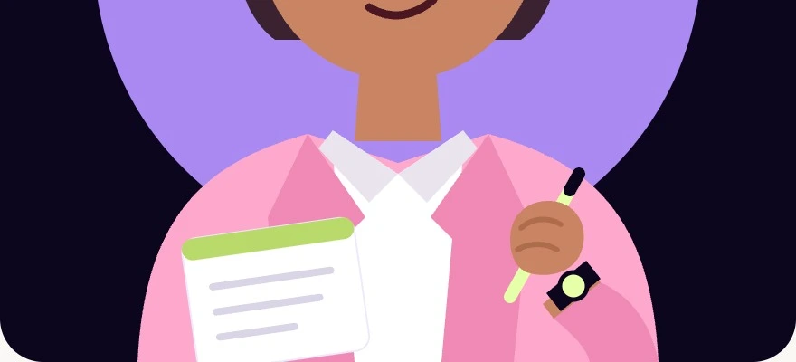
Writing that looked staged
The AIThe pen shook in the air, then sat on the page.
My callA clipboard tilted toward her, with the pen working behind the board.
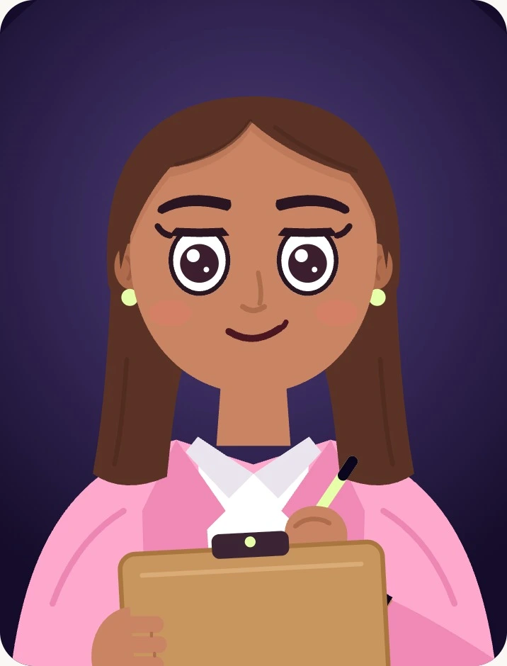
A profile picture, not a person
The AIA bun and a purple circle, to stand out on the dark screen. The bun bobbed with every nod.
My callLong warm brown hair with a soft glow.
Fixes became rules. When a bug had a clear cause, the build learned to refuse it. By the end, 120+ unit tests and 3 end to end suites all passed.
What real calls caught that tests didn't
Every test passed, and four bugs still showed up only on real calls. Each fix started from the cause in the call log, not the symptom.
4 bugs What broke, why, and what I changed
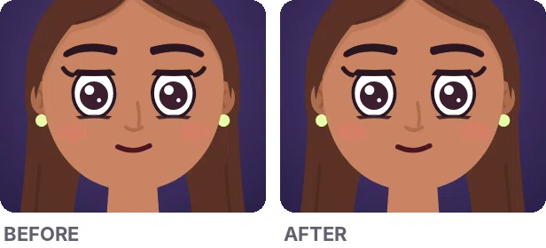
Her mouth stopped while you could still hear her
WhyShort sounds were merged away, so whole words collapsed into one shape.
ResultFreezes over 300 ms while she spoke went from 15 to 2, both real pauses.
The fixSounds grouped so no word collapses, a cap on how long one shape holds, and a guard for stalled timing.
Grey flashes when her face changed
WhyTwo half transparent parts overlapped.
The fixEvery swap cuts in one frame.
[calm] Tell me about a time…
What you read nowTell me about a time…
Stage directions in the question you were reading
WhyThe voice model writes tone cues like "[calm]" into its text, and the app showed them as they came.
The fixThe app strips every cue before you see it, and expressive mode is off.
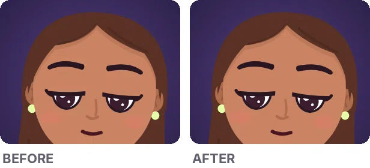
An eyelid spun as she looked up from her clipboard
WhyAn angle was saved the long way round.
The fixThe build now refuses rotations like that.
Lip sync, in more detail
Her mouth used to freeze for over 300 ms while she was still speaking, 15 times in a test. After the fix, 2 remain, and both are real pauses in her speech.
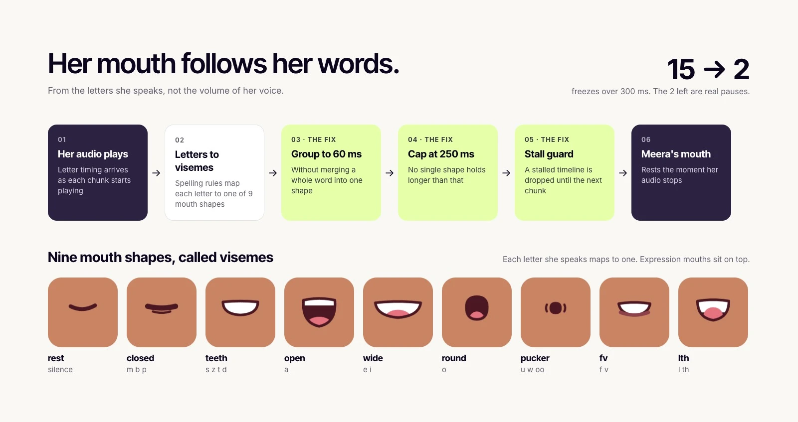
Under the hood How the lip sync works
- Letter timing. Her voice arrives in chunks, each with the timing of every letter as it starts to play.
- Letters to mouth shapes. Simple spelling rules pick one of nine visemes: p, b and m close the lips, o rounds them, e and i widen them.
- Readable timing. Quick letters are grouped so each shape shows for at least 60 ms, and each shape lands about 40 ms early, when the sound reaches you.
- A fallback. If letter timing goes missing, or one shape would hold past 250 ms, her mouth follows her voice volume instead.
What I cut
Most of the work was deciding what not to ship.
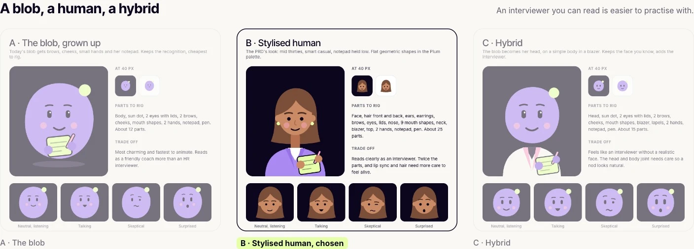
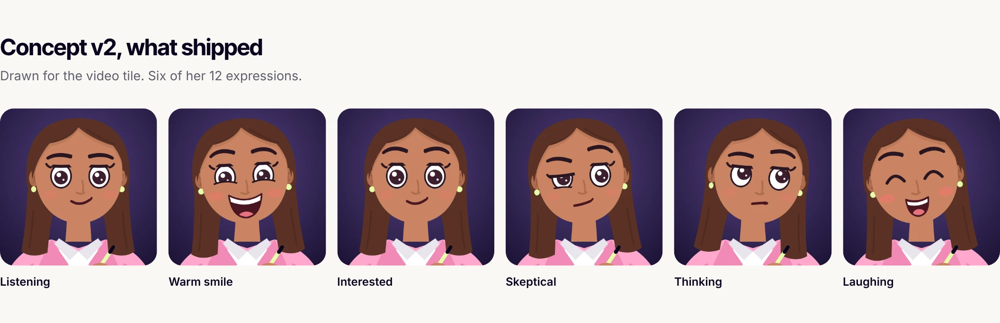
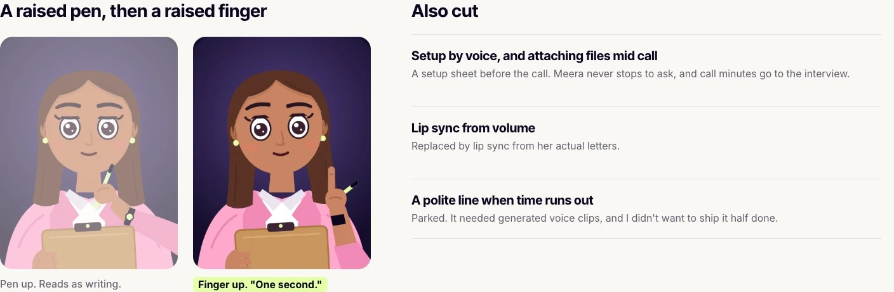
Left out of v1, on purpose
- Accounts and cloud storage. Practice is personal, so it all stays on the phone.
- Grading technical correctness. Meera judges how you answer, not whether you're right about your field. An AI can't judge every field reliably, and one wrong verdict would break trust in the whole scorecard.
- Camera analysis. A real privacy cost, for little gain over voice.
- More interviewers. One done well beats several done thinly.
- Sharing and payments. Not until the core loop is proven.
What I learned
What I'd take into the next product.
The hardest design work was behaviour, not screens.
When she cuts in. How long she waits in a silence. That she says "take your time", never "are you still there?". What she never asks about. None of that shows up in a mockup, and all of it decides whether the call feels real.
Numbers find the problem. Eyes judge the fix.
I couldn't say why she felt flat until I measured her. While talking, only her mouth moved. That told me where she was dead, not how lively to make her, because more motion isn't more life. Past a point it reads as jitter. The right amount was a judgement I made by watching her, not a number I hit.
The AI sounds just as sure when it's wrong.
The code came fast, and so did confident answers. Some were right, some weren't, and they read the same. My job moved to knowing what to check before anything shipped.
If I took it further.
I'd test it with other people and measure how many calls reach the scorecard.
Notes for builders
If you're building something like this.
Stack My stack
| Part | Tool |
|---|---|
| Voice, turn taking, tools in the app | ElevenLabs Agents |
| Scorecard | Gemini, fastest working model first, with fallbacks |
| Character rig | Rive, generated as code from vector parts with the Rive CLI |
| App | Next.js on Vercel, data in IndexedDB on the phone |
| Code | Claude Code |
| Screens and character concepts | Paper |
Lessons What cost me the most time to figure out
- Use onAudioAlignmentPlayback for lip sync, not onAudioAlignment. The second arrives seconds early.
- Expressive voices write style tags like "[calm]" into the text. Strip them, or turn expressive mode off.
- Don't put an overloaded model first in your fallback chain. It hangs instead of failing.
- Rive's free plan shows a splash screen, and the paid plans price by seat.
- Check your Vercel project is linked to Git before you rely on deploys.